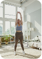

Título Tratamiento
Ejercicios
Pre entrenamiento
Empieza con una serie suave de
movimientos circulares de
tobillos y muñecas.

Guardar

Pre entrenamiento
Empieza con una serie suave de
movimientos circulares de
tobillos y muñecas.
Guardar